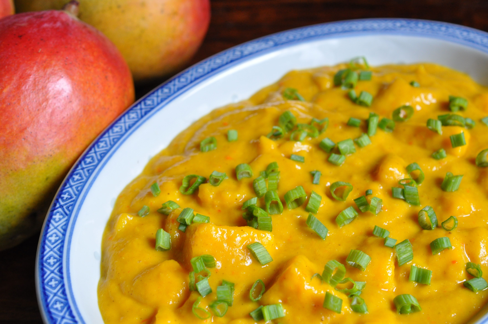

South Indian Recipes
South Indian RecipesBreakfast
Rice items
Sambars and Curry
Sweets
Snacks
 Mango curry, a delightful South Indian dish, reflects the region's rich culinary heritage and the vibrant flavors that define its cuisine. This unique curry is a celebration of the tropical abundance that characterizes South India, where mangoes are not just a seasonal fruit but a culinary treasure. The history of mango curry is deeply rooted in South Indian tradition, where the use of local, seasonal ingredients is a culinary art form. Mango curry, known as "Manga Curry" in Malayalam, is particularly popular in the coastal regions of Kerala and Karnataka. Its origins can be traced back to traditional home kitchens, where homemakers would experiment with the diverse range of mango varieties available during the summer months. The taste of mango curry is a perfect fusion of sweet, tangy, and spicy flavors. The ripe mangoes contribute a natural sweetness, while the addition of tamarind lends a pleasant tanginess to the curry. The dish is further enriched with a blend of aromatic spices, including mustard seeds, curry leaves, and fenugreek, creating a symphony of flavors that tantalize the taste buds. The preparation of mango curry often includes a coconut-based gravy, adding a creamy texture and a distinct South Indian touch. The curry pairs exceptionally well with steamed rice, dosa, or even Indian breads like chapati. It is a testament to the region's culinary ingenuity, transforming a simple fruit into a complex and flavorful dish that captures the essence of South Indian cuisine.
Mango curry, a delightful South Indian dish, reflects the region's rich culinary heritage and the vibrant flavors that define its cuisine. This unique curry is a celebration of the tropical abundance that characterizes South India, where mangoes are not just a seasonal fruit but a culinary treasure. The history of mango curry is deeply rooted in South Indian tradition, where the use of local, seasonal ingredients is a culinary art form. Mango curry, known as "Manga Curry" in Malayalam, is particularly popular in the coastal regions of Kerala and Karnataka. Its origins can be traced back to traditional home kitchens, where homemakers would experiment with the diverse range of mango varieties available during the summer months. The taste of mango curry is a perfect fusion of sweet, tangy, and spicy flavors. The ripe mangoes contribute a natural sweetness, while the addition of tamarind lends a pleasant tanginess to the curry. The dish is further enriched with a blend of aromatic spices, including mustard seeds, curry leaves, and fenugreek, creating a symphony of flavors that tantalize the taste buds. The preparation of mango curry often includes a coconut-based gravy, adding a creamy texture and a distinct South Indian touch. The curry pairs exceptionally well with steamed rice, dosa, or even Indian breads like chapati. It is a testament to the region's culinary ingenuity, transforming a simple fruit into a complex and flavorful dish that captures the essence of South Indian cuisine.
